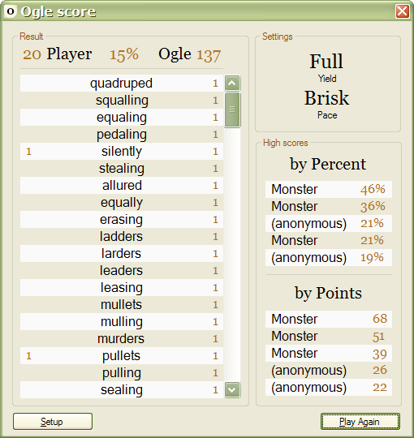

Score
The Score dialog appears after time runs out:

The Result box shows all the words entered by you or Ogle. Click any word to see where it was in the grid. At the top you will find your point score, Ogle's score, and your score as a percentage of Ogle's.
High scores are displayed on the right. Scores are tracked by Yield and Pace, so playing with different settings causes a new set of scores to appear.
Click Setup to return to the Setup dialog, or click Play Again to start a new game with the same settings.